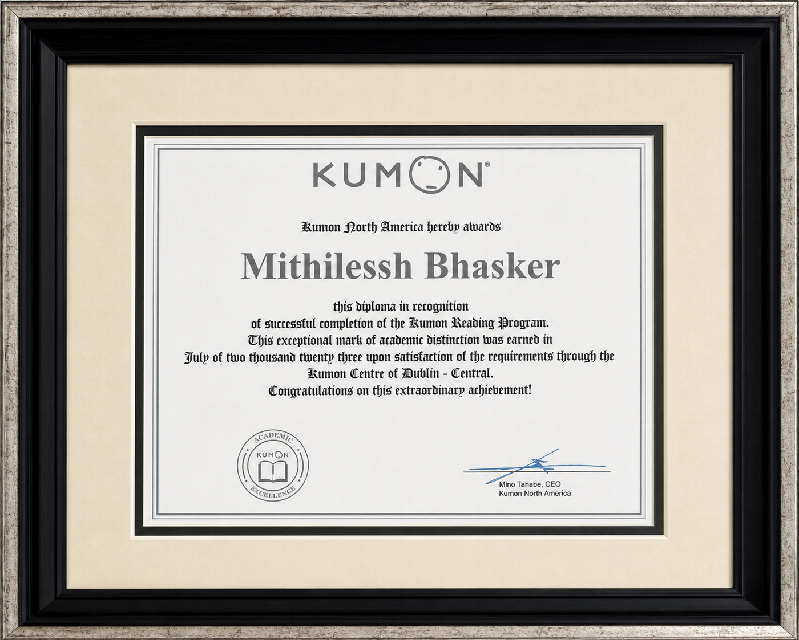
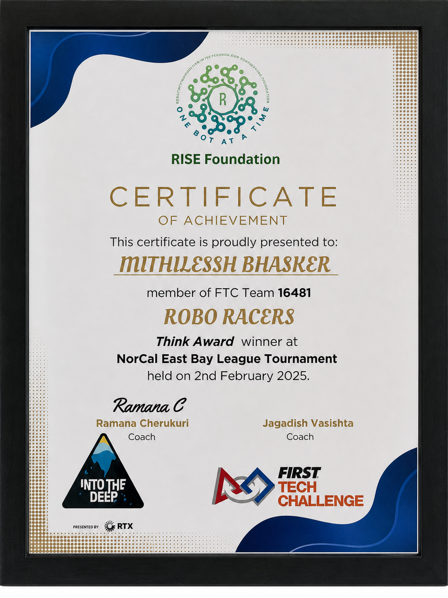
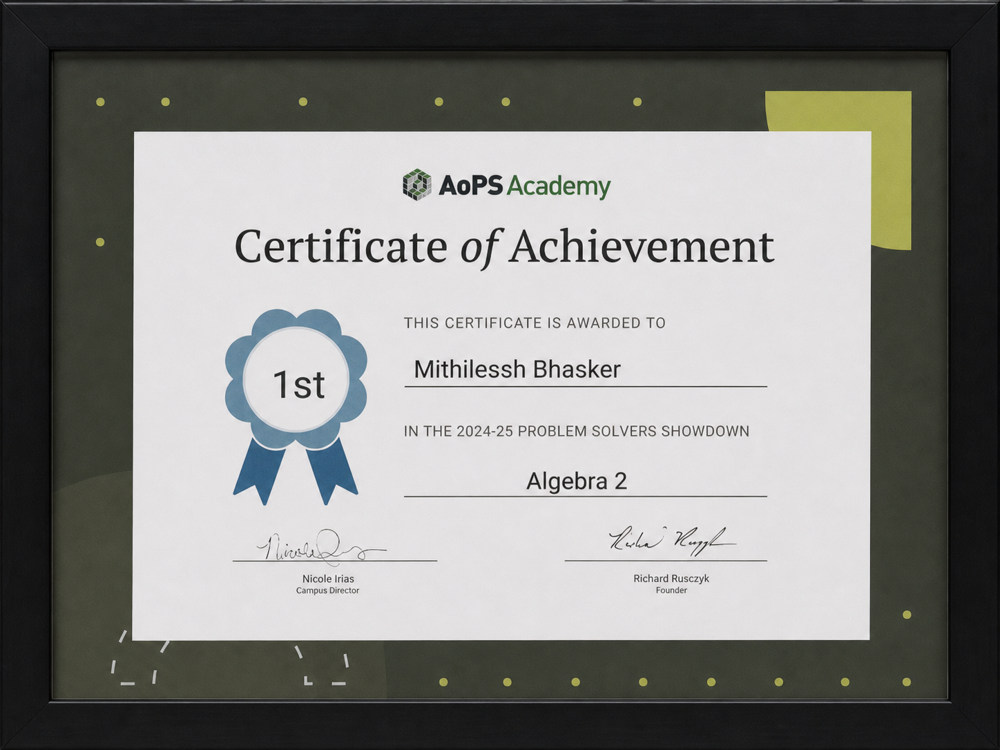

Beta Tester · Pedro Pathing
Robotics softwareEvaluate autonomous pathing behavior and provide implementation feedback based on hands-on FTC robot testing.

Student software developer
Student software developer with hands-on experience in FTC robotics, autonomous pathing, hardware prototyping, and web product development. Known for turning early concepts into dependable tools, documenting technical work clearly, and contributing effectively within a team.
Develop and test FTC Java robot software, tune autonomous paths, analyze telemetry, and prepare reliable movement systems for competition.
Evaluate autonomous pathing behavior and provide implementation feedback based on hands-on FTC robot testing.
Support students in mathematics and reading, assess assignments, explain corrections, and help learners build accuracy, independence, and confidence.

Completed the full reading curriculum, demonstrating long-term academic discipline and advanced reading comprehension.

Introduction to Computer Science.

Cybersecurity Fundamentals.

Fundamentals of Remote Sensing.

Robo Racers 16481.

AoPS Academy.
Custom RP2040 PCB with mechanical keys, rotary input, addressable LEDs, an OLED, and a three-part printed enclosure.
60-key ergonomic keyboard designed in Fusion 360 and KiCad with CircuitPython and KMK firmware.
Team command center for tasks, approvals, expenses, updates, meetings, and follow-ups.